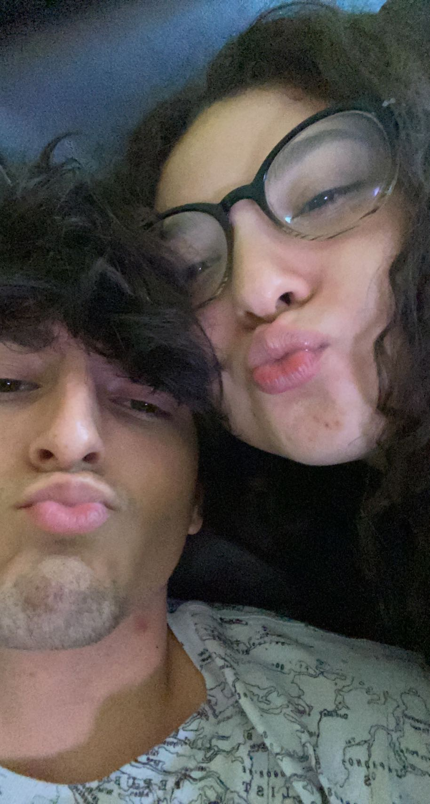
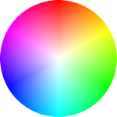

You are honest with me all the time, well most of the time when you are not upset. You make me happy by wanting my attention, listening to me, spending time with me, playing games with me, and even trying to code jsut for me. You are supportive most of the time as well, telling me to finish studying, go hard in the gym, or just having my back. You try to make sure you do not hurt my feelings also which I love about you since that shows you really care about me. Most importantly you are very loyal to me, which is probably one of my biggest turn ons about you :o. Now click this box to flip it.
When it comes to you Alliah, I like to think about a whole bunch of things, but what I usually think about is pretty funny. I love to think about the first time we met and how you did not seem shy at all! I always remember u staying into my soul and I was so nervous. Besides that I also think about places or activities we can do in the future. For example, I want to play soccer tennis with you, or go to a coool country together. I also love to think about making fire food for you, but you never want my food :(. Now click this box to flip it.
I like to think that I know a lot about you by know Alliah, but there is always more to learn. So here are some little things I know about you. I know that your faviorite color is black and you said mediterranean food is your faviorite. Speaking of food, you love food haha, that is like almost your favorite thing in the world. You hate red meat, well almost all red meat, you can't stand it. You love the perfume at ulta, I forgot the name of it, but when I see it I will know which one it is. You have pretty much seen every damn movie in existence haha. For the last thing I'm about to mention, please don't get mad :). I notice you kind of sleep with your left eye open and it almost looks like you are staring at me when you were sleeping haha. Now click this box to flip it.
We have had many mistakes in our relationship so far, but that is normal and we bounce back from it because I don't let you be upset, I make you talk about it haha. I know I can come off as rude sometimes, you have told me multiple time and you do not have to repeat yourself, but I really try not to be mean or rude to you, I just want you to be happy because when that smile comes out, my whole world shines up (like right now for example, yes I see your smile :0). You have had your moments as well, where you annoyed me or upsetted me by doing some stupid things, just like I have, but that's okay because it's kind of cute seeing you all flustered when I'm upset, sicne you have no idea what to do haha. But anyways, I love you and I will always love you cutie, keep studying and keep grinding :). Now click this box to flip it.